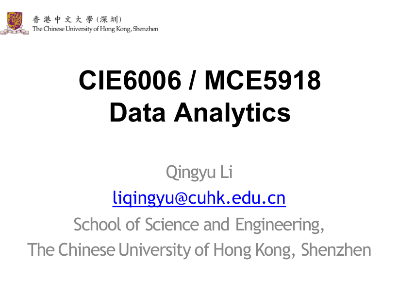
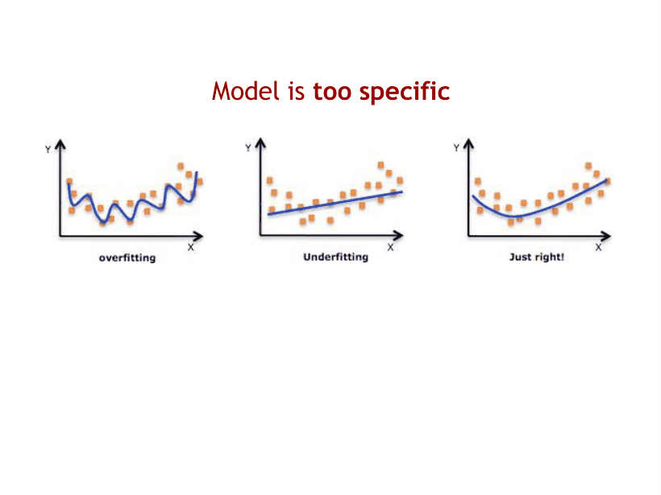

P1
课程封面与授课教师

这页是课程封面：课程代码 CIE6006/MCE5918，课程名 Data Analytics（数据分析），授课教师 Qingyu Li（邮箱 liqingyu@cuhk.edu.cn），来自香港中文大学（深圳）理工学院。封面页，直接看后面的课程信息即可。
覆盖 p12–p65（从 "Introduction to Data Analytics" 到 AI/Turing test）。半期卷里本讲以选择/判断/简答出现，几乎不考计算；但"两步法、相关≠因果、欠拟合/过拟合"是 L3–L7 反复引用的地基，后面每讲都会回头用。
课件把"和数据打交道"压成极简两步：(1) Collect data —— 通过计算机、传感器、人、事件采集；(2) Do something with it —— 做决策、验证假设、获得洞察、预测未来。然后给出定义：Data Science 就是从 (1) 走到 (2)。这句是全讲的纲，也是简答题"什么是数据科学"最省字的标准答法。
为什么要背这个框架：后面每一讲都能挂上去 —— L2 是"把数据存好、查出来"，L3/L4 是"在大数据里找相似对象"，L5/L6 是"用数据建模预测"，L7 是"把高维数据压扁"，L9 是"把行为数据变成推荐"。答题时先说是第几步、再做哪类任务，结构分就稳了。
例：Ocean Health 项目 = 44,000 个传感器、20 亿条测量（物理/化学/生物）→ 典型第 (1) 步 collect and curate；PharmGKB 收集"人类基因如何影响药物反应"的知识并发布 → 第 (2) 步 do something with it。
课件把它称作 working with data 的 "dirty secret"，列了五件事：从难取的源里抽数据、填补缺失值、剔除可疑数据、统一格式/编码/单位、去重与匹配。必须记住的数字是：数据准备通常占一个数据项目 80% 以上的工作量。这句每年都被改成判断题（"建模与分析才是耗时大头"→ 错）。
例：同一列里同时出现 "北京 / Beijing / BJ"、"2024-01-01 / 01/01/2024"，不先统一，后面的 join（L2）会把本应匹配的行全部漏掉，聚合也会把同一实体算成三类。
课件（p24–p36）把数据处理技术分成五层。注意这五层是叠加而不是替代，一个真实项目往往五层全用。考试若问"下面任务属于哪一层"，判据不是工具名，而是输出是什么：确定答案 → 基础操作；模式/规则 → 挖掘；模型与对未见数据的预测 → ML；图形 → 可视化；把脏数据变干净 → 采集与准备。
| 层次 | 一句话定义 | 输出 | 课件例子 |
|---|---|---|---|
| Basic Data Manipulation and Analysis | 做定义良好的计算或问定义良好的问题（queries） | 确定的事实/统计值 | 过去 20 年各国 1 月平均低温；20–30 岁女性买过的 100 元以上商品数；过去一年价格波动最大的十只股票 |
| Data Mining | 在数据里找模式（patterns） | 频繁项集、关联规则、分组 | X、Y、Z 常一起被买；喜欢电影 X 的人也喜欢 Y；同一所大学的学生常互为好友 |
| Machine Learning | 用数据建模型并做预测 | 模型 + 对缺失/未来数据的预测 | 20 岁以上女性更可能点某广告；成绩好的学生 SAT 也会好；城市气温≈邻近城市均值（除非在海边/山里） |
| Data Visualization | 数据的图形化呈现 | 图（bar/pie/scatter/map 等） | 一图胜千言；Napoleon's Army 行军图；误导性图表 |
| Data Collection and Preparation | 把原始数据变成可用数据 | 干净、一致、去重的数据集 | 抽数据、补缺失、去可疑、统一单位编码、去重匹配（占 80% 工作量） |
课件的 "roughly" 那句就是标准答案：Basic data analysis 和 data mining 给出的是"现有数据内部"的答案（查询结果、频繁项集、关联规则）；machine learning 用现有数据去预测 missing 或 future data。所以"60% 男性、70% 女性回应了广告"是对已有数据的描述（mining/analysis），而"20 岁以上女性更可能点广告"是对未来个体的预测（ML）。
ML 的三大任务课件只点名三个词：Regression（回归，预测数值）、Classification（分类，预测类别）、Clustering（聚类，无标签分组）。数据挖掘则点名 frequent item-sets、association rules，以及针对网络/文本/多媒体的专门技术。
例（判据训练）："找出过去一年波动最大的十只股票"能写成 SQL，是 basic query；"买了尿布的人常买啤酒"是 mining；"预测某用户下周会不会买啤酒"是 ML；"把 10 年销量画成折线"是 visualization。
课件的态度很清楚：不要低估基本图形的力量（bar chart、pie chart、scatterplot、map），并且承认早期经典图（如 Napoleon's Army 行军图，p32 归为 early visualization）与花式图（p33 fancy visualization）的价值；只是提醒日常分析里基本图往往就够。同时专设一页讲 misleading data visualization（误导性图表）：坐标轴不从 0 开始、用面积/体积代替长度、3D 透视变形，都能把 2 倍差距画成 10 倍。判断题常问"图看起来如此，所以结论成立"——错，先看图有没有说谎。
课件给的定义：Correlation —— 两个值一起变化（height 与 shoe size、grades 与 SAT）；Causation —— 一个值直接影响另一个（education level → starting salary、temperature → cold drink sales）。结论一句："Correlation does not imply causation"。
课件还给两条极重要的判据：相关通常"容易"检验（有观测数据就能算相关系数）；因果通常无法检验（要排除所有替代解释，理想上需随机对照实验）。看到"显著相关"就直接声称因果，是这类题的唯一错误答案。
例（答题模板）："冰淇淋销量与溺水人数正相关 → 不能推出冰淇淋导致溺水；最可能的解释是第三个变量气温（或季节）同时抬高两者；若要检验因果，需控制气温后看偏相关，或做干预实验。"
C (混杂变量，常未观测)
↙ ↘
A ←— 相关 —→ B
（A、B 之间可能根本没有箭头）
答题技巧：凡题干出现"相关/同时上升/呈正比"，标准动作是先问三句——有没有第三个变量？是不是时间趋势？是不是反向因果？这三问能覆盖 90% 的卷面。
课件先讲 Regression 本身：给一堆点拟合一条直线或曲线（= 模型），再用它预测新点的值。紧接着给了两种失败方式，这就是本讲唯一"看图说话"的考点。
课件原话 "Model used for predictions is too simplistic"。三个例子：① 60% 男性 / 70% 女性回应了广告 → 结论"以后所有广告都投女性"（忽略年龄、渠道、产品差异）；② "有四条腿和平面台面的家具 = 餐桌"（把沙发、书桌都算进来）；③ 城市气温≈邻近城市平均，除非它在海边或山里（把地形造成的大偏差当噪声）。共同点：模型没能力表达数据里真实存在的结构。
课件原话 "Model used for predictions is too specific"。两个例子：① 广告最佳目标是"25–27 岁、短黑发、一个孩子、一只宠物狗的已婚女性"（把训练样本的偶然细节当规律）；② "四条 100 cm 带装饰的腿 + 抛光圆角木质平顶 = 餐桌"（新产品一个都不满足，模型完全没法用）。共同点：模型记住了训练数据的噪声，换新数据就崩。

| 维度 | Underfitting 欠拟合 | Overfitting 过拟合 |
|---|---|---|
| 模型复杂度 | 过低（直线/常数规则） | 过高（高次曲线/规则过细） |
| 训练集误差 | 高（连样本都没拟合住） | 极低（几乎 0） |
| 新数据误差 | 高 | 高（方差大，换数据就崩） |
| 一句话判据 | 训练差 + 测试差 | 训练极好 + 测试差 |
| 补救方向 | 加特征、换更复杂的模型 | 更多数据、正则化、剪枝、降维、简化模型 |
| 回归示意（p51/p52） | 一条直线硬穿散点 | 一条疯狂摆动的曲线 |
为什么这页必须背：L5 的 SVM 松弛变量、决策树剪枝、L6 的 k-means 选 k、L7 的 rank 选择（保留几个奇异值），本质都是同一个问题的不同名字——复杂度不够则欠拟合，复杂度过头则过拟合。简答题用"训练误差 / 测试误差"两个数字区分最稳。
课件用"多少个莎士比亚"当标尺（全集 = 5 MB），给了一条 5 档阶梯。这页几乎必出选择题（问最大/最小/相差几个数量级），也可能出一步除法。
| 对象 | 体量 | 折合莎士比亚 |
|---|---|---|
| 莎士比亚全集 | 5 megabytes | 1 |
| 一个普通人产生的数据 | 50 gigabytes | 10,000 |
| 美国国会图书馆 | 10 terabytes | 2,000,000 |
| Facebook 每天上传 | 1 petabyte | 200,000,000 |
| 全人类每天产生 | 2.5 exabytes | 课件写 500 trillion |
会算的三类题：① 单位阶梯题——两个量差几档就是差几个 1000 倍（50 GB 与 10 TB 差 200 倍）；② 百分比题——一个人 50 GB 占国会图书馆 10 TB 的 50 ÷ 10,000 = 0.5%；③ 折合题——1 PB 是 5 MB 的 2 亿倍。
课件内部有个小矛盾：2.5 EB ÷ 5 MB 实际是 5×10¹¹（5,000 亿），课件却写 500 trillion（5×10¹⁴）。考试按"量级：每天 EB 级"记，做比值题只用前四行（它们自洽），不要在这行做除法。
这一页是"选型题"的题库：给一个场景问该用什么。课件（p54–p57）按规模/结构/可靠性给了一张选型谱系。
课件（p61）直接引了 Kenneth Cukier 的 TED 标题 "Big data is better data"：数据变多后可以不再依赖抽样，能看到长尾、异常与细分群体。但紧接着 p59 给了刹车，这几句必须一起背：
例：p63 的 "Engine / Fuel" 类比 —— deep learning 是引擎，big data 是燃料；这解释了为什么算力和数据同时爆发时 AI 才起飞。答题可加一句"但燃料多不等于结论对：偏差、噪声、混杂不会因为数据变大而消失"（呼应上一节）。
课件按"数据是怎么来的"把隐私风险分成三类。这页只有三个例子，但几乎每次考试都会变成"给场景判断属于哪一类"的配对题，所以三个例子必须能一一对上。
答题模板：先判断属于哪一类 → 再说失败模式（采集不透明 / 用途越界 / 匿名失效）→ 最后给补救。课外补充：课件只列了风险、没有给对策，简答若问"怎么办"，可答知情同意与数据最小化（对应第一类）、用途限制与审计（第二类）、k-匿名/差分隐私与聚合发布（第三类）。
例（配对训练）："医院公开标称已去标识的就诊记录，研究者用邮编 + 出生日期定位到个人" → 第三类；"App 在用户未同意的后台持续读取通讯录" → 第一类；"电商把退货地址卖给第三方营销公司" → 第二类。
答案：0.5%；2 亿个。
步骤一：统一单位。10 TB = 10 × 1000 GB = 10,000 GB；50 ÷ 10,000 = 0.005，即 0.5%。
步骤二：1 PB = 1000 TB = 1,000,000 GB；1,000,000 GB ÷ 0.005 GB = 200,000,000。也可直接用课件倍数：5 MB × 2×10⁸ = 1 PB。
答案：三种解释 —— ① 冰淇淋导致溺水（无生理机制，几乎可排除）；② 溺水导致冰淇淋（反向因果，不合理）；③ 隐藏变量：气温/季节同时抬高两者（最可能，confounding）；④ 两者都随时间趋势上涨造成的纯巧合（spurious）。
检验因果：控制气温后看偏相关，或用随机对照/自然实验（如某年夏季异常高温）；观测数据只能提供因果的弱证据。
答案：过拟合（overfitting，模型 too specific）。训练误差极低、换新数据就崩，是过拟合的典型指纹；若训练集本身就很差（例如只有 60%），才是欠拟合（too simplistic）。
补救：更多/更有代表性的数据；正则化、剪枝、降维或降低模型复杂度；用交叉验证选超参。
诊断数字：训练误差 vs 验证/测试误差，两者的 gap 就是过拟合程度的指标。
每格 = 课件原页截图 + 中文讲解；标 考点 的页容易出题或容易错。宽屏时图在左、讲解在右；点顶部「页面目录」可跳到任意页。